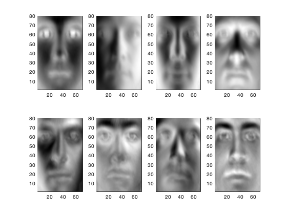
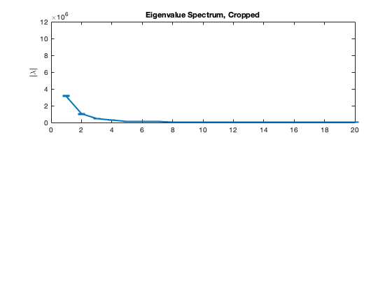
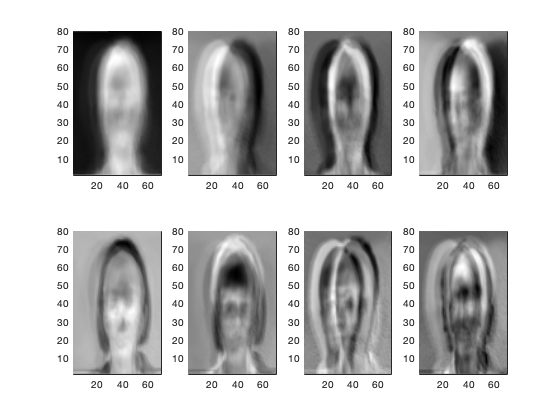
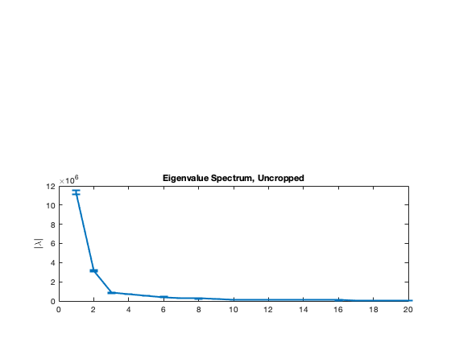
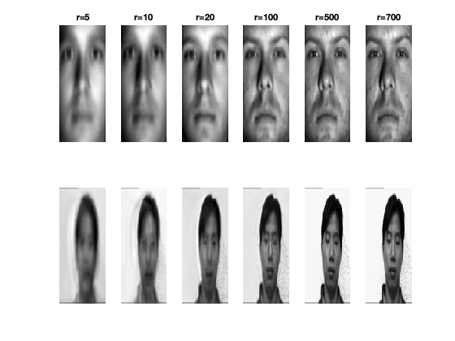

Contents
AMATH 584 Homework 2: Yale Faces B
clear; clc; close all
Load data
A_cropped = [];
A_uncropped = [];
dim1 = 80;
dim2 = 70;
count = 1;
for i = 1:39
path = ['CroppedYale/yaleB' num2str(i, '%02.f')];
P = path;
addpath(genpath(P));
dict = dir(P);
for j = 1:numel(dict)
file = dict(j).name;
if length(file) > 3
image = imread(file);
data = imresize(double(im2gray(imread(file))), [dim1,dim2]);
A_cropped(:,count) = data(:)';
count = count + 1;
end
end
end
count = 1;
for i = 1:15
path = 'yalefaces_uncropped/yalefaces';
P = path;
addpath(genpath(P));
dict = dir(P);
for j=1:numel(dict)
file = dict(j).name;
if length(file) > 3
image = imread(file);
data = imresize(double(im2gray(imread(file))), [dim1,dim2]);
A_uncropped(:,count) = data(:)';
count = count + 1;
end
end
end
Perfrom a singular value decomposition on the cropped images
[U_c,S_c,V_st_c] = svd(A_cropped);
figure(1);
for i = 1:8
col = U_c(:, i);
new_image = reshape(col, [dim1, dim2]);
subplot(2,4,i);
pcolor(flip(new_image)), shading interp, colormap gray
end

PCA analysis- cropped
[~,~,Spca] = pca(A_cropped);
eigvals_c = Spca;
N_st = dim1*dim2;
err_c = eigvals_c*sqrt((2/N_st));
figure(2);
subplot(2,1,1);
errorbar(eigvals_c(1:20), err_c(1:20), 'linewi', 2)
ylim([0 12E6]);
ylabel('|\lambda|')
title('Eigenvalue Spectrum, Cropped')

Perform a singular value decomposition on the uncropped images
[U_uc,S_uc,V_st_uc] = svd(A_uncropped);
figure(3);
for i = 1:8
col = U_uc(:, i);
new_image = reshape(col, [dim1, dim2]);
subplot(2,4,i);
pcolor(flip(new_image)), shading interp, colormap gray
end

PCA analysis- uncropped
[~,~,Spcau] = pca(A_uncropped);
eigvals_uc = Spcau;
N_st = dim1*dim2;
err_uc = eigvals_uc*sqrt((2/N_st));
figure(2);
subplot(2,1,2);
errorbar(eigvals_uc(1:20), err_uc(1:20), 'linewi', 2)
ylim([0 12E6])
ylabel('|\lambda|')
title('Eigenvalue Spectrum, Uncropped')

Rank-based Reconstructions- uncropped
figure();
count = 1;
r = [5 10 20 100 500 700];
for ri= 1:length(r)
face = 42;
Xapprox_c = U_c(:,1:r(ri)) * S_c(1:r(ri),1:r(ri)) * V_st_c(:,1:r(ri))';
Xapprox_uc = U_uc(:,1:r(ri))*S_uc(1:r(ri),1:r(ri))*V_st_uc(:,1:r(ri))';
face_c = reshape(Xapprox_c(:,face), [dim1, dim2]);
face_uc = reshape(Xapprox_uc(:,face),[dim1,dim2]);
subplot(2,length(r),count)
imagesc(face_c), axis off, colormap gray;
title(['r=',num2str(r(ri),'%d') ]);
subplot(2,length(r), count+length(r))
imagesc(face_uc), axis off, colormap gray;
count = count + 1;
end
